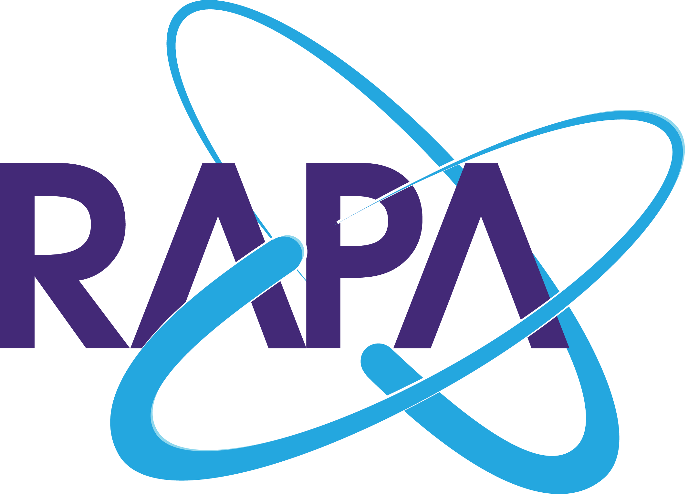

RAPA Smart Field
전주번호 위치 조회 시스템
전주번호 기반 추정 및 실측 좌표 등록/조회
조회 조건
원점 선택
자동
원점1 (경기 오산)
원점2 (강원 태백)
원점3 (전남 담양)
원점4 (경남 양산)
조회 시 원점 기본값은 자동이며, 현재 위치 기준으로 가장 가까운 원점을 선택합니다.
조회
길안내
조회 중
.
.
.
원점과 전주번호를 입력한 뒤 조회하세요.
좌표 등록
현재 선택 후보: 없음
현재 GPS 불러오기
좌표 저장
저장은 조회한 전주번호 + 선택한 후보(후보1~후보4) 기준으로 수행됩니다.
후보를 먼저 선택하면 지도 이동 및 저장 대상 후보가 함께 변경됩니다.
지도 클릭 시 위도/경도가 자동 입력됩니다.
GPS 정확도는 30m 이하 권장, 100m 이상이면 재측정 권장, 300m 이상이면 지도 클릭 또는 수기 보정을 권장합니다.
일반지도
위성지도
실좌표
추정좌표
선택후보
원점/기준선
GPS 위치
클릭좌표
알림
안내
취소
확인